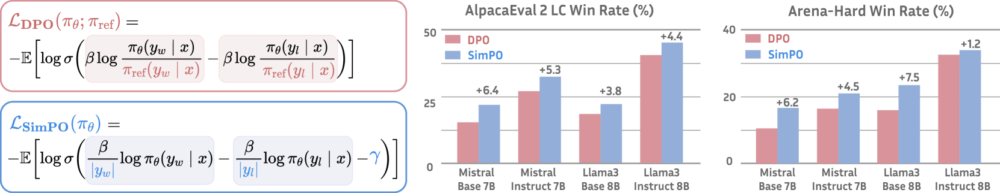
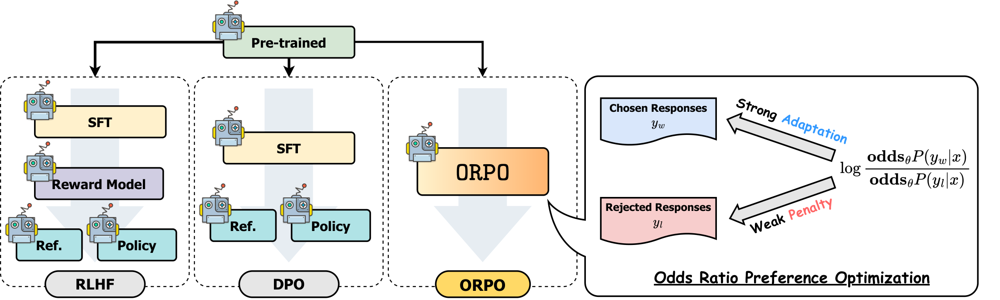

第 23 章 · DPO 变体全家桶
直接偏好优化（DPO）以其简洁的无奖励模型、无在线采样范式重塑了对齐领域，但在实际落地中，DPO 逐渐暴露了长度作弊偏见、依赖配对标注、必须常驻参考模型导致显存冗余，以及 SFT 与对齐阶段割裂等结构性局限。为此，学术界与工业界催生了庞大的 DPO 变体家族。本章深度剖析基于行为经济学前景理论的非配对对齐算法 KTO、摆脱参考模型并引入目标间隔的极简算法 SimPO、将指令微调与偏好惩罚一步到位的单阶段算法 ORPO，以及 IPO、cDPO、TDPO 等前沿改进。通过统一数学建模、PyTorch 核心实现、超参全景对比与工业选型指南，助读者在生产环境中精准驾驭偏好优化算法的演化力量。
1. 原版 DPO 的理论局限与变体演进全景
直接偏好优化（Direct Preference Optimization, DPO）通过将 Bradley-Terry（BT）偏好模型下的最优策略闭式解代入目标函数，成功绕过了奖励模型（Reward Model, RM）的显式训练与近端策略优化（PPO）在线 Rollout 的工程泥潭。然而，随着 DPO 在海量开源模型与商业项目中的广泛应用，后训练研究者发现其基础假设与损失设计存在数个阻碍工业性能进一步跃迁的隐形瓶颈：
- 对长度偏差（Length Bias）极其脆弱：DPO 损失计算的是整句 Token 序列对数概率的累加和：
\[ \log \pi_\theta(y \mid x) = \sum_{t=1}^{|y|} \log \pi_\theta(y_t \mid x, y_{
- 必须强依赖成对偏好数据（Paired Data）：DPO 必须要求输入具备严格的二元配对结构 \((x, y_w, y_l)\)。然而在真实的工业应用场景中（例如电商客服反馈、社交平台点赞、搜索点击日志），海量数据通常是以单条交互为单位的二值反馈（点赞/点踩、接受/忽略），配对构建不仅消耗庞大的交叉比对算力，还会引入人为构造配对的分布畸变。
- 显存开销依然受制于参考模型（Reference Model）：尽管 DPO 免去了 Critic 和 RM，但在前向计算中依然需要冻结的 \(\pi_{\mathrm{ref}}\) 计算基础对数似然，且为了保证数值一致性，\(\pi_{\mathrm{ref}}\) 与 \(\pi_\theta\) 必须驻留在显存中，使得长序列（例如 8k、16k）训练依然容易面临 GPU 显存 OOM（Out Of Memory）的困扰。
- 两阶段割裂与交叉熵分布漂移：传统流程必须先完成 SFT，然后再进行 DPO。若 SFT 模型在后续 DPO 训练中过度抑制输者 \(y_l\)，可能导致模型连基本的语法结构、生成流畅度和指令遵从格式也一并退化，出现生成坍缩。
围绕上述痛点，后训练社区在 2023 至 2024 年间展开了一场密集的“去繁就简”与“数学泛化”运动。理解这些变体的核心不仅在于记住每个缩写的名字，更在于洞悉它们在优化几何面、隐式奖励动力学及数据工程利用率上的差异化权衡。本节小结：DPO 并非终点，而是偏好空间直方化优化的新起点。
2. 从配对偏好到非配对点赞：KTO（Kahneman-Tversky Optimization）
人类在现实生产系统中的偏好反馈绝大多数不是相对的，而是绝对的单点信号。例如，用户在 ChatGPT 界面点击“赞”或“踩”，或者在代码 Copilot 中选择“采纳补全”或“手动回退删除”。如果必须将这些数据重构为 DPO 所需的 \((x, y_w, y_l)\) 对，必须进行启发式负采样或调用大模型二次评估，成本极高且容易引入误匹配。

2.1 Kahneman-Tversky 前景理论与损失厌恶
Ethayarajh 等人在 2024 年提出 KTO（Kahneman-Tversky Optimization），将行为经济学诺贝尔奖成果——前景理论（Prospect Theory）引入大语言模型对齐。前景理论的核心认知在于：人类对收益和损失的心理感知是不对称的，人类具有天然的“损失厌恶”（Loss Aversion）倾向——失去 100 元带来的痛苦显著大于得到 100 元带来的快乐。
在 KTO 的形式化定义中，针对输入 \(x\) 与单条回答 \(y\)，定义隐式效用函数为策略模型相对参考模型的对数优势：
\[ r_\theta(x, y) = \beta \log \frac{\pi_\theta(y \mid x)}{\pi_{\mathrm{ref}}(y \mid x)} \]为了判断该回答究竟是“收益”还是“损失”，KTO 引入了一个参考点（Reference Point）\(z_{\mathrm{ref}}\)。\(z_{\mathrm{ref}}\) 对应于期望参考优势：
\[ z_{\mathrm{ref}} = \mathbb{E}_{x', y'}\left[\beta \log \frac{\pi_\theta(y' \mid x')}{\pi_{\mathrm{ref}}(y' \mid x')}\right] \]基于前景理论的 S 型价值函数 \(v(r) = 1 - \sigma(r - z_{\mathrm{ref}})\)，KTO 分别针对被人类“接受”（Desirable, \(y \in \mathcal{Y}_{\mathrm{des}}\)）和“拒绝”（Undesirable, \(y \in \mathcal{Y}_{\mathrm{undes}}\)）的样本制定不对称损失：
\[ \mathcal{L}_{\mathrm{KTO}}(\pi_\theta) = \lambda_{\mathrm{des}} \mathbb{E}_{(x, y) \in \mathcal{Y}_{\mathrm{des}}} \left[ 1 - \sigma\left(\beta \log \frac{\pi_\theta(y \mid x)}{\pi_{\mathrm{ref}}(y \mid x)} - z_{\mathrm{ref}}\right) \right] + \lambda_{\mathrm{undes}} \mathbb{E}_{(x, y) \in \mathcal{Y}_{\mathrm{undes}}} \left[ 1 - \sigma\left(z_{\mathrm{ref}} - \beta \log \frac{\pi_\theta(y \mid x)}{\pi_{\mathrm{ref}}(y \mid x)}\right) \right] \]其中 \(\lambda_{\mathrm{undes}} > \lambda_{\mathrm{des}}\)（通常设置 \(\lambda_{\mathrm{undes}} / \lambda_{\mathrm{des}} \in [1.2, 1.5]\)）严格体现了损失厌恶——优化器对坏样本的惩罚力度大于对好样本的奖励。在批训练中，\(z_{\mathrm{ref}}\) 可以直接通过同批次或其他动量追踪样本的优势均值动态估计。
DPO 的优化梯度驱动力来源于 \(\nabla_\theta \left( \log \pi_\theta(y_w \mid x) - \log \pi_\theta(y_l \mid x) \right)\)，其隐式基线就是负样本本身；而 KTO 则是将每个独立样本与全数据集分布的平均隐式收益 \(z_{\mathrm{ref}}\) 进行对比。因此，即使用户只有一堆优质采纳代码和一堆独立用户退回的问题代码，两者甚至不属于同一 Prompt，KTO 也能稳定优化。本节小结：KTO 拓宽了偏好数据源的工业获取路径。
3. 摆脱参考模型与长度惩罚的极简法则：SimPO
尽管 DPO 将模型数量从 4 个缩减为 2 个，但参考模型 \(\pi_{\mathrm{ref}}\) 依然如影随形。维持 \(\pi_{\mathrm{ref}}\) 不仅占用与主模型等量的显存，而且由于在反向传播前必须执行一次前向计算以获取参考概率，造成了约 30%~50% 的额外前向开销。更严重的是，研究表明 DPO 经常通过“刷字数”来提高胜率。

3.1 长度归一化（Length Normalization）
普林斯顿大学 Meng 等人在 2024 年提出 SimPO（Simple Preference Optimization）。SimPO 提出了一个极其敏锐的观察：DPO 中之所以必须引入参考模型 \(\pi_{\mathrm{ref}}\)，本质是为了防止策略在无约束的对数概率优化中漂移，并充当抵消生成先验分布的正则项。但由于 DPO 使用的是累加对数概率，较长的句子天然包含了更多的负值累加，从而使隐式奖励评估偏离本质质量。
SimPO 提出直接使用序列级平均对数概率作为隐式奖励度量：
\[ r_{\mathrm{SimPO}}(x, y) = \frac{\beta}{|y|} \log \pi_\theta(y \mid x) = \frac{\beta}{|y|} \sum_{t=1}^{|y|} \log \pi_\theta(y_t \mid x, y_{3.2 目标间隔（Target Margin \(\gamma\)）
在移除了参考模型后，如何保证优化的稳定性、防止输赢样本差距无底线放大？SimPO 借鉴了支持向量机（SVM）的间隔最大化思想，在 Bradley-Terry 模型中强行插入一个固定的目标边界常数 \(\gamma > 0\)：
\[ p(y_w \succ y_l \mid x) = \sigma\left( r_{\mathrm{SimPO}}(x, y_w) - r_{\mathrm{SimPO}}(x, y_l) - \gamma \right) \]由此导出的 SimPO 完整损失函数为：
\[ \mathcal{L}_{\mathrm{SimPO}}(\pi_\theta) = -\mathbb{E}_{(x, y_w, y_l) \sim \mathcal{D}} \left[ \log \sigma\left( \frac{\beta}{|y_w|} \log \pi_\theta(y_w \mid x) - \frac{\beta}{|y_l|} \log \pi_\theta(y_l \mid x) - \gamma \right) \right] \]SimPO 的优雅之处在于：完全不需要加载参考模型 \(\pi_{\mathrm{ref}}\)！这不仅使得显存直接减半，允许训练批大小（Batch Size）成倍扩大或上下文长度扩容一倍，更在 AlpacaEval 2 和 MT-Bench 上大幅超越了原始 DPO，且模型输出的平均长度明显收敛于真实人类期望长度。本节小结：SimPO 证明了优秀的归一化机制比复杂的网络依赖更有效。
4. SFT 与对齐合二为一：ORPO（Odds Ratio Preference Optimization）
在传统的对齐工作流中，工程师必须遵循“先有 SFT，后有 DPO/PPO”的两阶段铁律。然而，两阶段训练带来了一个严重隐患：SFT 阶段模型只学习“什么是对的”，而对“什么是错的”一无所知；当进入第二阶段对齐时，如果惩罚过猛，模型很容易将 SFT 学到的语言建模能力一并遗忘，发生灾难性分布漂移（Distribution Shift）。

4.1 赔率比（Odds Ratio）定义与直觉
KAIST 的 Hong 等人在 2024 年提出 ORPO（Odds Ratio Preference Optimization）。ORPO 同样彻底抛弃了参考模型，更激进的是，它倡导将 SFT 和偏好对齐合并为同一个单阶段训练过程。
对于输入 \(x\) 与生成序列 \(y\)，其在策略模型下的概率为 \(P_\theta(y \mid x)\)。ORPO 借用统计学中的优势比/赔率（Odds）概念：
\[ \mathrm{odds}_\theta(y \mid x) = \frac{P_\theta(y \mid x)}{1 - P_\theta(y \mid x)} \]直观上，\(\mathrm{odds}_\theta(y \mid x)\) 衡量了模型生成序列 \(y\) 的倾向相较于生成“除 \(y\) 以外任意序列”的比率。基于此，获胜样本 \(y_w\) 相对落败样本 \(y_l\) 的赔率比（Odds Ratio, OR）定义为：
\[ \mathrm{OR}_\theta(y_w, y_l \mid x) = \frac{\mathrm{odds}_\theta(y_w \mid x)}{\mathrm{odds}_\theta(y_l \mid x)} = \frac{P_\theta(y_w \mid x) / (1 - P_\theta(y_w \mid x))}{P_\theta(y_l \mid x) / (1 - P_\theta(y_l \mid x))} \]4.2 联合目标函数的动态博弈
ORPO 构造的目标函数由两部分组成：第一项是对胜者样本 \(y_w\) 进行标准因果语言建模（SFT 交叉熵损失），第二项是赔率比的惩罚对数：
\[ \mathcal{L}_{\mathrm{ORPO}}(\theta) = \mathbb{E}_{(x, y_w, y_l)} \left[ \mathcal{L}_{\mathrm{SFT}}(x, y_w) + \lambda \cdot \mathcal{L}_{\mathrm{OR}}(x, y_w, y_l) \right] \] \[ \mathcal{L}_{\mathrm{SFT}}(x, y_w) = -\frac{1}{|y_w|} \sum_{t=1}^{|y_w|} \log \pi_\theta(y_{w,t} \mid x, y_{w,通过将超参 \(\lambda\)（通常取 0.1~0.5）作为调节开关，ORPO 在每一个批次的前向与反向传播中，一边将注意力权重集中于拟合正确答案的词汇模式，一边动态抑制不良选项的赔率，真正实现了“一步到位的对齐微调”。本节小结：ORPO 以极低工程链路成本打通了指令遵循与偏好抑制。
5. 其它关键变体解析：IPO、cDPO、TDPO 与 BCO
除了 KTO、SimPO 和 ORPO 三大工业主流外，还有一系列针对特定数学病态或数据缺陷设计的精巧变体。
5.1 IPO（Identity Preference Optimization）：防止确定性退化
DeepMind 的 Azar 等人在 2023 年（arXiv:2310.12036）指出，DPO 在非正则化极限下，其交叉熵损失会将对数比差值推向无穷大，导致策略模型在偏好样本上的似然趋近于 1，从而发生过拟合与多样性崩塌。IPO 提出直接在真实概率空间最小化均方误差：
\[ \mathcal{L}_{\mathrm{IPO}}(\pi_\theta) = \mathbb{E}_{(x, y_w, y_l)} \left[ \left( \log \frac{\pi_\theta(y_w \mid x)}{\pi_{\mathrm{ref}}(y_w \mid x)} - \log \frac{\pi_\theta(y_l \mid x)}{\pi_{\mathrm{ref}}(y_l \mid x)} - \frac{1}{2\tau} \right)^2 \right] \]IPO 的二次方惩罚特性确保当偏好优势达到预设阈值 \(\frac{1}{2\tau}\) 时，梯度自动衰减为零，强力遏制了奖励过度膨胀。
5.2 保守 DPO（cDPO）：针对标签噪声的标签平滑
真实标注中，人类或强模型评分必然包含 10%~20% 的噪声误判（即原本平庸甚至错误的回答被误标为 \(y_w\)）。cDPO 假设标注存在固定比例 \(\epsilon\) 的反转翻转率，推导出类似二元交叉熵标签平滑（Label Smoothing）的目标：
\[ \mathcal{L}_{\mathrm{cDPO}}(\pi_\theta) = -\mathbb{E} \left[ (1 - \epsilon) \log \sigma(\hat{r}_\theta(y_w, y_l)) + \epsilon \log \sigma(-\hat{r}_\theta(y_w, y_l)) \right] \]其中 \(\hat{r}_\theta(y_w, y_l) = \beta \log \frac{\pi_\theta(y_w \mid x)}{\pi_{\mathrm{ref}}(y_w \mid x)} - \beta \log \frac{\pi_\theta(y_l \mid x)}{\pi_{\mathrm{ref}}(y_l \mid x)}\)。cDPO 阻止了损失函数在脏数据样本上产生巨大的极端梯度，大幅提升了脏数据池中的微调鲁棒性。
5.3 TDPO（Token-level Direct Preference Optimization）：逐词细粒度约束
传统 DPO 将整个回复作为一个标量奖励处理，忽视了推理链（Chain-of-Thought）中错误往往发生于某一个特定步骤的本质。TDPO（Zeng et al., 2024, arXiv:2404.11999）将对齐目标拆解到自回归解码的每一个位置 \(t\)：
\[ \mathcal{L}_{\mathrm{TDPO}}(\pi_\theta) = -\mathbb{E} \left[ \sum_{t=1}^{|y_w|} \log \sigma\left( \beta \log \frac{\pi_\theta(y_{w,t} \mid x, y_{w,6. DPO 家族工程实战：统一损失函数实现与训练流水线
为了直观展现各变体在计算流图与梯度反传中的异同，我们编写一个可插拔的 PyTorch 模块，集中实现 DPO、SimPO、KTO 与 ORPO 四大核心损失函数，并提供生产级训练配置与度量监控。
import torch
import torch.nn as nn
import torch.nn.functional as F
class UnifiedAlignmentLoss(nn.Module):
"""
统一偏好对齐损失计算引擎：
支持 DPO, SimPO, ORPO 以及 KTO 核心逻辑
输入各序列对应的未归一化 logits 或已计算的 token-level log-probabilities
"""
def __init__(self, beta=0.1, simpo_gamma=0.5, orpo_lambda=0.1, kto_des_weight=1.0, kto_undes_weight=1.33):
super().__init__()
self.beta = beta
self.simpo_gamma = simpo_gamma
self.orpo_lambda = orpo_lambda
self.kto_des_weight = kto_des_weight
self.kto_undes_weight = kto_undes_weight
def dpo_loss(self, pi_w_logps, pi_l_logps, ref_w_logps, ref_l_logps):
"""
标准 DPO 损失:
pi_w_logps: 策略模型对胜者样本的序列对数概率和 [B]
ref_w_logps: 参考模型对胜者样本的序列对数概率和 [B]
"""
pi_logratios = pi_w_logps - pi_l_logps
ref_logratios = ref_w_logps - ref_l_logps
logits = self.beta * (pi_logratios - ref_logratios)
loss = -F.logsigmoid(logits).mean()
# 计算隐式奖励差用于指标监控
with torch.no_grad():
chosen_rewards = self.beta * (pi_w_logps - ref_w_logps)
rejected_rewards = self.beta * (pi_l_logps - ref_l_logps)
reward_margin = (chosen_rewards - rejected_rewards).mean()
return loss, reward_margin
def simpo_loss(self, pi_w_logps, pi_l_logps, w_lengths, l_lengths):
"""
SimPO 损失: 长度归一化 + 目标间隔 gamma，完全无需参考模型
w_lengths: 胜者文本 Token 长度张量 [B]
"""
norm_w = pi_w_logps / w_lengths.clamp(min=1.0)
norm_l = pi_l_logps / l_lengths.clamp(min=1.0)
# 核心公式: beta * (norm_w - norm_l) - gamma
logits = self.beta * (norm_w - norm_l) - self.simpo_gamma
loss = -F.logsigmoid(logits).mean()
with torch.no_grad():
reward_margin = (norm_w - norm_l).mean()
return loss, reward_margin
def orpo_loss(self, sft_loss, pi_w_logps, pi_l_logps, w_lengths, l_lengths):
"""
ORPO 损失: SFT 负对数似然 + 负样本赔率比惩罚
sft_loss: 胜者序列上的自回归交叉熵标量损失
"""
# 计算平均对数概率作为 odds 的平滑近似
norm_w = pi_w_logps / w_lengths.clamp(min=1.0)
norm_l = pi_l_logps / l_lengths.clamp(min=1.0)
# log_odds = log(p / (1 - p)) = log_p - log(1 - p)
# 当 p 极小时，log(1 - exp(log_p)) 近似为 0，因此 log_odds 差异近似为 norm_w - norm_l
log_odds_ratio = norm_w - norm_l
loss_odds = -F.logsigmoid(log_odds_ratio).mean()
total_loss = sft_loss + self.orpo_lambda * loss_odds
return total_loss, loss_odds
def kto_loss(self, pi_logps, ref_logps, is_desirable, kl_ref_point=0.0):
"""
KTO 损失: 非配对单样本处理
pi_logps: [B], ref_logps: [B]
is_desirable: 布尔张量 [B]，True 代表被用户点赞/采纳，False 为拒绝
kl_ref_point: 动量追踪的期望参考隐式收益 z_ref
"""
# 计算隐式收益
r = self.beta * (pi_logps - ref_logps)
loss_des = 1.0 - torch.sigmoid(r - kl_ref_point)
loss_undes = 1.0 - torch.sigmoid(kl_ref_point - r)
# 按照损失厌恶权重加权
loss = torch.where(is_desirable, self.kto_des_weight * loss_des, self.kto_undes_weight * loss_undes).mean()
return loss接下来，我们展示如何使用 HuggingFace TRL 库在实际工程中配置并启动基于 SimPO 或 ORPO 的高性能生产训练流。以下脚本展示了如何配置 CPOTrainer / ORPOTrainer 并开启 FlashAttention-2 与 DeepSpeed ZeRO 降低显存占用：
import torch
from datasets import load_dataset
from transformers import AutoModelForCausalLM, AutoTokenizer, TrainingArguments
from trl import CPOConfig, CPOTrainer, ORPOConfig, ORPOTrainer
def train_simpo_demo():
model_name = "meta-llama/Meta-Llama-3-8B-Instruct"
tokenizer = AutoTokenizer.from_pretrained(model_name)
tokenizer.pad_token = tokenizer.eos_token
# 1. 加载偏好数据集 (格式需包含 prompt, chosen, rejected)
dataset = load_dataset("argilla/ultrafeedback-binarized-preferences-cleaned", split="train[:5000]")
# 2. 配置 SimPO (基于 CPOConfig，指定 loss_type="simpo")
training_args = CPOConfig(
output_dir="./output_simpo_llama3",
learning_rate=5e-7,
lr_scheduler_type="cosine",
per_device_train_batch_size=2,
gradient_accumulation_steps=8,
max_length=2048,
max_prompt_length=1024,
beta=2.0, # SimPO 的 beta 推荐值通常大于 DPO (例如 2.0 ~ 2.5)
cpo_alpha=0.0, # 关闭 BC 正则，退化为纯 SimPO
loss_type="simpo", # 启用 SimPO 损失
simpo_gamma=1.4, # 目标边界 gamma 设为 1.4
bf16=True,
gradient_checkpointing=True,
logging_steps=10,
save_strategy="steps",
save_steps=200,
warmup_ratio=0.1,
)
# 3. 加载单模型 (SimPO 彻底免去 reference model，节约一半显存)
model = AutoModelForCausalLM.from_pretrained(
model_name,
torch_dtype=torch.bfloat16,
attn_implementation="flash_attention_2"
)
trainer = CPOTrainer(
model=model,
args=training_args,
train_dataset=dataset,
tokenizer=tokenizer,
)
print(">>> 启动 SimPO 训练...")
trainer.train()
if __name__ == "__main__":
train_simpo_demo()在偏好训练中，监控指标绝不能仅仅停留在 Loss 的下降。偏好优化的核心指标包括：隐式奖励裕度（Reward Margin）、胜者序列平均长度（Chosen Sequence Length）以及负样本对数概率变化率。以下代码提供了在 Eval 循环中实时诊断是否出现长度作弊或崩溃的评测脚本：
import torch
import numpy as np
def compute_alignment_diagnostics(eval_batch_outputs):
"""
监控对齐诊断指标，侦测长度作弊与策略崩塌
eval_batch_outputs 字典包含:
chosen_logps: [N] 胜者对数概率
rejected_logps: [N] 输者对数概率
chosen_lens: [N] 胜者序列长度
rejected_lens: [N] 输者序列长度
"""
ch_logp = np.array(eval_batch_outputs["chosen_logps"])
rej_logp = np.array(eval_batch_outputs["rejected_logps"])
ch_len = np.array(eval_batch_outputs["chosen_lens"])
rej_len = np.array(eval_batch_outputs["rejected_lens"])
# 1. 准确率（胜者似然大于输者的比例）
accuracy = (ch_logp > rej_logp).mean()
# 2. 长度相关性检测: 检查似然差与长度差的皮尔逊相关系数
logp_diff = ch_logp - rej_logp
len_diff = ch_len - rej_len
corr_matrix = np.corrcoef(logp_diff, len_diff)
length_bias_corr = corr_matrix[0, 1]
# 3. 相对奖励裕度 (Normalized Margin)
norm_ch_logp = ch_logp / np.maximum(ch_len, 1)
norm_rej_logp = rej_logp / np.maximum(rej_len, 1)
norm_margin = (norm_ch_logp - norm_rej_logp).mean()
print(f"=== 对齐健康度诊断报告 ===")
print(f"偏好分类准确率 (Acc): {accuracy * 100:.2f}% (正常区间: 65% ~ 85%)")
print(f"似然差与长度差相关性: {length_bias_corr:.3f}")
if length_bias_corr > 0.4:
print(" [警告] 侦测到强烈的长度作弊偏见！模型倾向于靠无意义拉长文本提高胜率！")
print(f"归一化奖励裕度: {norm_margin:.4f} (稳定正增长代表置信度实质提高)")
return {
"accuracy": accuracy,
"length_bias_corr": length_bias_corr,
"norm_margin": norm_margin
}7. 工业选型决策矩阵与消融调优指南
在面临真实生产业务场景时，算法架构师往往面临在 DPO、KTO、SimPO、ORPO 之间抉择的难题。选型不仅关乎模型最终在 AlpacaEval 或 Arena-Hard 上的基准排名，更直接决定了计算卡集群成本、训练吞吐速度以及标注数据的准备范式。
| 算法名称 | 数据形式 | 需驻留 Ref 模型 | 核心超参数 | 相对 DPO 显存节约 | 抗长度偏好能力 | 最佳工业适配场景 |
|---|---|---|---|---|---|---|
| DPO | 成对偏好 \((x, y_w, y_l)\) | 是 | \(\beta \in [0.05, 0.2]\) | 基准 (0%) | 弱（易诱发啰嗦作弊） | 通用对话对齐，高质量人工精标偏好池 |
| SimPO | 成对偏好 \((x, y_w, y_l)\) | 否 | \(\beta \in [2.0, 2.5], \gamma \in [1.0, 1.5]\) | ~45% | 极强（显式长度归一化） | 长文本上下文对齐、显存受限场景、追求精炼回复 |
| ORPO | 成对偏好 \((x, y_w, y_l)\) | 否 | \(\lambda \in [0.1, 0.5]\) | ~50% | 中等 | 算力极度受限、希望跳过独立 SFT 阶段直接微调 |
| KTO | 单样本点赞/踩 \((x, y, \mathrm{label})\) | 是 | \(\beta \in [0.1, 0.3], \lambda_{\mathrm{des}}/\lambda_{\mathrm{undes}} \approx 1.33\) | 0% | 强（无配对长度比对） | 海量搜索点击日志、客服交互、无配对标注资源 |
| IPO | 成对偏好 \((x, y_w, y_l)\) | 是 | \(\tau \in [0.01, 0.1]\) | 0% | 中等 | 偏好数据规模庞大、DPO 出现严重概率过拟合时 |
为了指导超参调优，我们整理了各主流算法在真实训练任务中的推荐超参数与调优警戒线：
| 算法 | 关键超参 | 推荐初始值 | 敏感度 | 调参表征与失效后果 |
|---|---|---|---|---|
| DPO | \(\beta\) | 0.1 (Llama-3 可降至 0.01) | 极高 | 过大导致策略快速崩塌，过小导致对齐失效、完全学不到偏好 |
| SimPO | \(\gamma\) (Target Margin) | 1.4 | 高 | \(\gamma\) 过大会导致损失过大发散；\(\gamma\) 过小会导致胜负样本无法拉开间隔 |
| SimPO | \(\beta\) | 2.0 ~ 2.5 | 中 | 由于有长度归一化，分母除以了序列长度，\(\beta\) 必须放大 10~20 倍才能提供足够的梯度缩放 |
| ORPO | \(\lambda\) (Odds Ratio 权重) | 0.1 ~ 0.2 | 高 | 过大会破坏模型基础语言建模能力，导致幻觉率与乱码骤增；过小起不到对齐效果 |
| KTO | \(\lambda_{\mathrm{undes}} / \lambda_{\mathrm{des}}\) | 4:3 (约 1.33) | 中 | 若负样本惩罚权重过低，模型对不良输入缺乏防御敏感性 |
初学者极易犯的错误是将原版 DPO 中的 \(\beta = 0.1\) 直接照搬到 SimPO 中！在 DPO 中，对数似然是按 Token 累加的，总绝对值通常在 \([-500, -50]\) 区间；而在 SimPO 中，进行了除以长度 \(|y|\) 的操作，归一化对数似然通常在 \([-3.0, -0.5]\) 区间。如果 SimPO 依然设置 \(\beta = 0.1\)，梯度会被缩小 100 倍以上，导致训练多轮后模型权重几乎没有实质变化。必须将 SimPO 的 \(\beta\) 设置在 \(2.0 \sim 2.5\) 区间。
如果业务团队已经拥有完善的 SFT 检查点，优先选择 SimPO，因为它彻底释放显存，且在消除长度偏差方面具备显著理论与实证优势；如果团队正启动一个全新垂直垂类项目，且算力预算极其紧张，无法承担“两阶段排队训练”，则采用 ORPO 将高质量配对数据直接作为单阶段输入是最高性价比路线。
8. 本章小结
- 变体演化本质：DPO 变体的繁荣并非单纯为了刷榜，而是直击 DPO 的四维软肋——长度偏差、依赖配对、参考模型显存冗余、阶段割裂。
- KTO 的生态价值：将前景理论的损失厌恶数学化，解耦了对严格二元配对数据的依赖，激活了工业界庞大的单样本点赞/点踩无配对日志池。
- SimPO 的极简美学：通过序列长度归一化（除以 \(|y|\)）消除啰嗦作弊，通过引入固定的目标边界 \(\gamma\) 彻底剔除参考模型，显存与计算开销大幅优化。
- ORPO 的合二为一：将赔率比惩罚与因果语言建模损失结合，把传统 SFT 与 Alignment 两个独立工序合并为一步完成，避免了分布漂移。
- 工程调参铁律：不同变体的梯度缩放基准不同，切勿跨算法机械套用超参（如 SimPO 的 \(\beta\) 须比 DPO 放大一个数量级）。
问题 1：为什么 SimPO 可以在完全不使用参考模型 \(\pi_{\mathrm{ref}}\) 的前提下稳定训练，而原版 DPO 去掉参考模型后极易崩溃？
答案：在原版 DPO 中，参考模型 \(\pi_{\mathrm{ref}}\) 的核心作用有两个：一是充当先验基线防止概率无底线漂移，二是提供负样本相对惩罚的尺度约束；更关键的是，DPO 使用的是非归一化的累加对数似然，如果不带 \(\pi_{\mathrm{ref}}\)，损失函数会简单粗暴地将所有 Token 的似然推向极限，引发高频词坍缩。SimPO 引入了两个关键机制打破了对 \(\pi_{\mathrm{ref}}\) 的依赖：首先，通过长度归一化 \(\frac{1}{|y|} \sum \log \pi_\theta\) 使得每个样本的置信度具有跨长度的可比性，消除了由于句子长短导致的绝对数值漂移；其次，引入了目标边界 \(\gamma\)（Target Margin），当胜者与输者的归一化似然差达到 \(\gamma\) 之后，梯度的回传自然衰减，从而形成了强大的几何正则化约束。
问题 2：某推荐系统团队希望直接利用线上用户的“文章收藏”与“滑动跳过”日志微调推荐模型，该团队应该优先选择哪种对齐算法？为什么？
答案：应该优先选择 KTO。因为用户在移动端的跳过与收藏是高度异步且非配对的单点交互（用户在不同时刻浏览不同文章，并不存在针对同一 Prompt 的并排对比）。如果使用 DPO、SimPO 或 ORPO，工程团队必须耗费巨大算力寻找语义相似的上下文强行将“跳过”与“收藏”文章拼凑成配对三元组，极易引入伪相关噪声。而 KTO 天然支持非配对单点反馈，只需将“收藏”标记为 Desirable，将“跳过”标记为 Undesirable，结合动量追踪的均值参考点 \(z_{\mathrm{ref}}\)，便能直接在单样本流上完成对齐训练。
问题 3：在实施 ORPO 训练时，如果模型在训练后期开始输出大量乱码或语法结构混乱，最可能由什么超参数失衡导致？应如何排查？
答案：最可能是由于赔率比惩罚项权重 \(\lambda_{\mathrm{OR}}\) 设置过大，或者初始学习率过高所导致。ORPO 的目标函数包含基础的 \(\mathcal{L}_{\mathrm{SFT}}\) 和对抗性质的 \(\mathcal{L}_{\mathrm{OR}}\)。当 \(\lambda_{\mathrm{OR}}\) 过大时，优化器为了最大化输赢样本的赔率比，会不顾一切地极度压制输者回复中出现的常用语法标记或连接词，导致策略模型的基础自回归语言分布遭受不可逆的破坏。排查手段：首先将 \(\lambda_{\mathrm{OR}}\) 从默认的 0.1 调低至 0.05 甚至 0.01；其次检查并记录训练过程中的 SFT 交叉熵 Loss，如果 SFT Loss 不降反升并急剧震荡，说明赔率惩罚项已经对基础语言建模形成了严重干扰，应调低 \(\lambda\) 并增加梯度裁剪（Gradient Clipping）。
参考文献
- [Rafailov+, 2023] Rafailov, R. et al. "Direct Preference Optimization: Your Language Model is Secretly a Reward Model." NeurIPS, 2023. arXiv:2305.18290
- [Ethayarajh+, 2024] Ethayarajh, K. et al. "KTO: Model Alignment as Prospect Theoretic Optimization." ICML, 2024. arXiv:2402.01306
- [Meng+, 2024] Meng, Y. et al. "SimPO: Simple Preference Optimization with a Reference-Free Objective." NeurIPS, 2024. arXiv:2405.14734
- [Hong+, 2024] Hong, J. et al. "ORPO: Monolithic Preference Optimization without Reference Model." arXiv preprint, 2024. arXiv:2403.07691
- [Azar+, 2023] Azar, M. G. et al. "A General Theoretical Paradigm to Understand Learning from Human Preferences (IPO)." AISTATS, 2024. arXiv:2310.12036
- [Zeng+, 2024] Zeng, Y. et al. "Token-level Direct Preference Optimization." arXiv preprint, 2024. arXiv:2404.11999
- [Park+, 2024] Park, R. et al. "Disentangling Length from Quality in Direct Preference Optimization." arXiv preprint, 2024. arXiv:2403.19159
- [Tang+, 2024] Tang, Y. et al. "Binary Classifier Optimization for Large Language Model Alignment (BCO)." arXiv preprint, 2024. arXiv:2404.04656